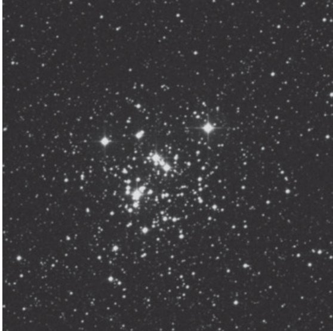

珠宝盒星团 · Jewel Box (NGC 4755)

南天星空中有这样一处所在，它将色彩斑斓的恒星如珍珠宝石般收纳于宇宙的匣子里——这便是珠宝盒星团，梅西耶星表中缺失的珍宝，却在南半球观星者的心中占据着无可替代的地位。
历史发现 (Historical Discovery)
The Jewel Box was first catalogued by Abbé Nicolas Louis de Lacaille during his meticulous survey of southern skies in 1755. The French clergyman and astronomer described it as "five to six stars between two mag. 6 stars," a modest account that belied the cluster's true magnificence. His catalog designation of Kappa Crucis (κ Crucis) remains in use today, a testament to the enduring value of his pioneering work.
阿贝·尼古拉·路易·德·拉卡耶神父在1755年对南天进行系统巡天时，首次将这个星团编入星表。这位法国天文学家和神职人员将其描述为"两颗6等星之间分布着五至六颗恒星"——这一朴实的记录远未能揭示这个星团真正的辉煌。他赋予的南十字座κ（κ Crucis）这一编号至今仍在使用，印证了他开创性工作的持久价值。
恒星画卷 (A Tapestry of Stars)
James Dunlop, observing from the Paris Observatory, provided an expanded view: "(χ Crucis, Bode) is five stars of the 7th magnitude, forming a triangular figure, and a star of the 9th magnitude between the second and third, with a multitude of very small stars on the south side."
詹姆斯·邓洛普在巴黎天文台进行观测时，提供了更为详尽的描述："（χ Crucis，波德星表）包含五颗7等星，构成三角形排列，第二与第三颗星间有一颗9等星，南侧聚集大量极暗弱恒星。"
But it was John Herschel who truly captured the Jewel Box's essence, writing with characteristic eloquence: "The central star (extremely red) or a most vivid and beautiful cluster of from 50 to 100 stars. Among the larger there are one or two evidently greenish; south of the red star is one 13th magnitude, also red; and near it is one 12th magnitude, bluish."
然而，真正捕捉到珠宝盒星团精髓的是约翰·赫歇尔，他以一贯的优美笔调写道："中央星（呈极红色）或是由50至100颗恒星组成的极其生动绚丽的簇群空间探测器。其中较大恒星中有一两颗明显呈绿色；那颗红星以南存在一颗13星等的红色恒星；其附近另有一颗12星等的蓝色恒星。"
基本参数 (Essential Parameters)
| 参数 | 中文 | 英文 | 数值 |
|---|---|---|---|
| 类型 | 疏散星团 | Open Cluster | - |
| 所属星座 | 南十字座 | Crux | - |
| 赤经 | 赤经 | RA | 12h 53.6m |
| 赤纬 | 赤纬 | Dec | -60° 21.4' |
| 视星等 | 视星等 | Magnitude | 4.2 |
| 角直径 | 角直径 | Angular Diameter | 10' |
| 表面亮度 | 表面亮度 | Surface Brightness | 9.2 |
| 距离 | 距离 | Distance | ~4,900 光年 |
| 发现者 | 发现者 | Discoverer | 德·拉卡耶 (1755) |
南十字之珍 (Treasure of the Southern Cross)
The Jewel Box, a true treasure among open clusters, adorns the Holy Grail of constellations, novelist Edward Robert Bulwer-Lytton's "great cross of the South." If there is one constellation wholly symbolic of travel and adventure, it is the Southern Cross. Early sailors saw the Cross as a good omen sent to guide them across uncharted seas.
宝盒星团，这个疏散星团中真正的瑰宝，点缀着星座界的圣杯——小说家爱德华·罗伯特·布尔沃-利顿笔下"南方的大十字架"。若论完全象征旅行与冒险的星座，非南十字座莫属。早期航海者视这个十字为吉兆，指引他们穿越未知海域。
Crux, the constellation's formal name, means "Cross," not the Southern Cross (which would be Crux Australis). Astronomers often refer to it as the "Southern Cross" because we need to differentiate it from the Northern Cross (Cygnus). Yet this southern celestial beacon contains far more than symbolic significance—it houses one of the most spectacular star clusters visible to amateur astronomers.
该星座的正式学名Crux意为"十字架"，而非"南十字"（后者应为Crux Australis）。天文学家常称其为"南十字座"，因需与北天的北十字座（天鹅座）相区别。然而，这座南天灯塔蕴含的意义远超象征层面——它容纳着业余天文学家所能观测到的最壮丽星团之一。
色彩的秘密 (Secrets in Color)
What makes the Jewel Box extraordinary is not merely the number of its stars, but their remarkable range of spectral types. The cluster contains supergiant stars in their final evolutionary stages, including a distinctive red ruby at its heart—the Cepheid variable known as KU Crucis. Around this crimson beacon orbit blue-white giants, creating a cosmic color palette that has captivated observers since the first telescopic glimpse.
使珠宝盒星团与众不同的，不仅是其恒星的数量，更在于它们非凡的光谱类型跨度。星团中包含处于演化末期的超巨星，其中包括一颗独特的红宝石——心部的造父变星KU Crucis。在这颗绯红信标周围，蓝白色巨星环绕运行，编织出一幅令自望远镜发明以来所有观测者着迷的宇宙色彩画卷。
At approximately 4,900 light-years distant, the cluster spans roughly 20 light-years in true diameter. Its estimated age of around 11 million years makes it a cosmic infant compared to our 4.6-billion-year-old Sun—yet those brilliant young stars are already approaching their spectacular supernova endings.
珠宝盒星团距离我们约4,900光年，实际直径约20光年。其约1,100万年的估计年龄，使它与46亿岁的太阳相比不过是宇宙中的婴儿——然而那些璀璨的年轻恒星正走向壮丽的超新星终结。
观测体验 (Observing Experience)
The Jewel Box demands to be observed with modest aperture under dark southern skies. Even through 7×50 binoculars, the cluster resolves into a gorgeous sprinkling of colored points against the velvety darkness of the Milky Way. A 4-inch refractor at 50× reveals the iconic "pack of playing cards" arrangement—four brilliant stars forming a distinctive quadrilateral with a ruddy fifth at its center.
珠宝盒星团呼唤着人们在清澈的南天夜色下，用适中的口径来观测。即便是通过7×50双筒望远镜，这个星团也能在银河的丝绒黑暗中分解为一片绚丽的彩色星点。4英寸折射镜在50倍放大下，揭示出标志性的"扑克牌"排列——四颗璀璨恒星构成独特的四边形，中央镶嵌着一颗红褐色成员。
Through an 8-inch Schmidt-Cassegrain, the view becomes positively transcendent. The central ruby pulses with subtle warmth while sapphires and emeralds among the surrounding stars flicker into crystalline definition. I spent an entire hour tracing delicate chains of 12th-magnitude suns that seemed to spiral outward into infinite depth, as if peering through a kaleidoscope of frozen light.
透过8英寸施密特-卡塞
🔒 受限于篇幅，本文仅展示部分样章。O'Meara 先生完整的观测手记、实测数据及未公开的独家配图，请参阅原著双语典藏版。
👉 立即在闲鱼获取《DEEP-SKY COMPANIONS》中英双语高清典藏版